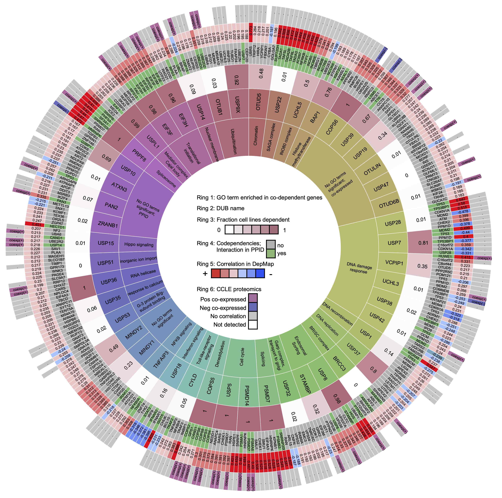

This website accompanies the manuscript:
Integrating multi-omics data
reveals function and therapeutic potential
of deubiquitinating enzymes
(2021) Laura M Doherty, Caitlin E Mills, Sarah A Boswell, Xiaoxi Liu, Charles Tapley Hoyt, Benjamin M
Gyori, Sara J Buhrlage, and Peter Karl Sorger.
eLife, 11:e72879.
Doherty et al. analyze deubiquitinating enzymes (DUBs) for relationships with other genes in the Cancer Dependency Map, Connectivity Map, Cancer Cell Line Encyclopedia, and protein-protein interaction databases: BioGRID, Pathway Commons, Reactome, IntAct, and NURSA. The DUB Portal presents these results in an interactive form, extends them with additional literature context, and links them directly to outside resources.
The landing page at https://labsyspharm.github.io/dubportal/ shows a table of 99 DUBs analyzed in Doherty et al. with some key properties and metrics associated with them. The column of the table can be interpreted as follows:
By clicking on the DUB’s gene symbol or name, a page is displayed with detailed information specific to the given DUB.
In the header, the DUB’s official gene symbol and name are listed along with links to a landing page for the given DUB and its orthologs across outside resources including HGNC, Entrez Gene, UniProt, MGI, and RGD. Links to Pathway Commons as well as the INDRA Database are also shown allowing browsing interactions associated with the DUB.
The DepMap Analysis section summarizes the method used in the analysis in Doherty et al. and then shows the table of seven top-correlated genes for the given DUB. The table provides the DepMap Correlation for each gene and Evidence from multiple sources that provide support for the given correlation in the form of prior knowledge about protein interactions. The evidence column contains badges for each interaction source (e.g., BioGRID, INDRA), in some cases also linking to a relevant page in the given resource.
The Dependency GO Term Enrichment section shows GSEA analysis results on the genes correlated using terms from the Gene Ontology and gene sets derived from the Gene Ontology Annotations database via MSigDB. Results below a p-value of 0.05 are shown in a table. The table contains the following columns:
The Literature Mining section extends on Doherty et al. to provide additional context on a given DUB, assembled from the scientific literature and pathway databases using the INDRA knowledge assembly system. Statements specific to the given DUB's deubiquitinase activity are shown in the first list, and all other Statements involving the DUB are shown in the second list. Both statement lists consist of a list of headings with each heading representing an interaction or regulation relationships such as “ATXN3 deubiquitinates STUB1”. Clicking on each heading opens up a list of specific evidence sentences from the literature supporting that statement with the names of entities highlighted and with links to the source publication. Statements can also be curated for correctness. To do this, click on the arrow to the left of the name of the source of the evidence to link out to the INDRA Database website where curations can be submitted as described in this tutorial. Statements curated as incorrect are excluded when the DUB Portal is rebuilt.
The DUB Portal is built and kept up to date automatically on a weekly basis using Github Actions workflows running Python code available at https://github.com/labsyspharm/dubportal. The number of publications as well as the number and list of INDRA Statements for each DUB are updated with each build to pull the latest available content.
Resources with an asterisk are automatically updated.
The DUB Portal was built by the INDRA team (indralab.github.io), part of the Laboratory of Systems Pharmacology, Harvard Medical School. Please contact indra.sysbio@gmail.com or submit an issue at https://github.com/labsyspharm/dubportal with questions or comments.